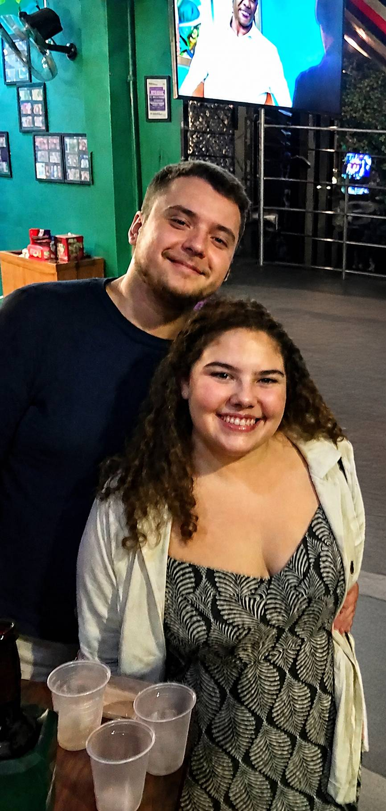

Nossa primeira fotinho juntos ❤️

Esperando minha cocotinha ficar pronta

Enquanto isso...

Te amo tanto ❤️

Que seja o primeiro mês de incontáveis
Uma pequena história nossa ❤️
Nossa primeira fotinho juntos ❤️
Esperando minha cocotinha ficar pronta
Enquanto isso...

Te amo tanto ❤️
Que seja o primeiro mês de incontáveis
Oi, minha cocotinha. ❤️ Hoje faz exatamente um mês desde que você disse "sim" à minha pergunta envergonhada. Pode parecer pouco tempo, mas, para mim, foi mais do que suficiente para perceber o quanto você faz bem aos meus dias e o quanto eu quero que continue fazendo parte deles. Cada conversa, cada risada, cada chamada e cada momento ao seu lado se transformaram em lembranças que eu adoro revisitar (até mesmo as humilhações no xadrez). Mesmo com a distância, nunca senti você realmente longe. Nossa conexão e a química que temos sempre fizeram você parecer estar aqui, do meu lado. Espero que este seja apenas o primeiro capítulo de uma história com muitos outros que ainda vamos escrever juntos. Feliz nosso primeiro mês. Eu te amo. ❤️ ❤️ Com carinho, Diego